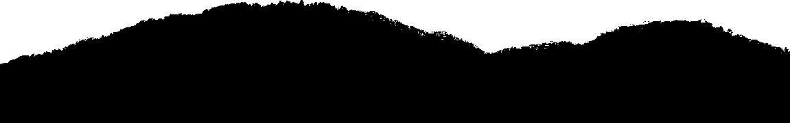
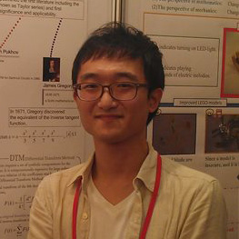
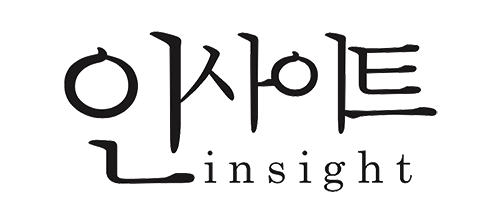

Toggle navigation
About
About PyCon Korea 2014
Code of Conduct
Conference detail
Announcements
Sponsors
Staff
Programs
Call for proposal
Schedule
Program list
Speakers
Jobfair
BOF
Registration
Venue
Contact
Language
한국어
English
SC0908
SC1956
SC1944
SC4907
SC7909
SC0916
SC2920
SC2940
SC1941
SCN902

Speakers
Kajiyama Ryusuke / ryusuke_kajiyama
Python기반의 MySQL Fabric을 이용한 샤딩 및 확장
강대성 / daesung_kang
Linkedin
국민내비 김기사와 Python
강철 / kang
Twitter
Homepage
Linkedin
30분만에 따라하는 동시성 웹 스크래퍼
구종만 / jongman
Github
Homepage
Linkedin
위대한 dict 이해하고 사용하기
김가경 / kakung_kim
Blog
Github
Facebook
IPython으로 상호적, 재현 가능한 생물정보학 연구하기

김경훈 / kyunghoon
Linkedin
NetworkX를 이용한 네트워크 분석
김승진 / seungjin
Twitter
Google-plus
Linkedin
Scalable Infrastructure Build on Cloud with Python
김정주 / haje01
Blog
Twitter
Github
IPython과 Pandas를 활용한 게임데이터 분석
김창민 / charleskim
Facebook
Linkedin
네트워크 엔지니어들을 위한 Python
김태웅 / kdog
Big data with 0% java
김형용 / yong27
Blog
Twitter
Facebook
Linkedin
DNA 데이터로 가족찾기
박은정 / lucypark
Twitter
Github
Homepage
자바, 미안하다! 파이썬 한국어 NLP
박현우 / lqez
Blog
Twitter
Github
Soundcloud
Linkedin
그릇된 팬심의 어긋난 결말
배권한 / darjeeling
Twitter
Github
파이콘 한국 2014 점철된 행운, 그리고 미래
배준현 / devunt
Blog
Twitter
Github
Python 3.4: AsyncIO
서지원 / seojiwon
SociaLite: 빅 데이터 분석을 위한 파이썬 통합 쿼리 언어
이상곤 / sgonv
Python으로 쿠키런 운영하기
이승준 / plusjune
Facebook
Linkedin
금융 데이터 이해와 분석
장혜식 / perky
Blog
개회사
정민영 / kkung
Blog
Twitter
Github
Linkedin
제약을 넘어 : Gevent
한상곤 / sigmadream
Blog
Homepage
Python with Cloud For Startup
홍민희 / hongminhee
Bitbucket
Github
Twitter
Blog
Facebook
Homepage
Geofront 개발 후기: Python 2와 작별하고 Python 3로 개발하기
Sponsor list
플래티넘
골드
실버
출판 및 미디어
